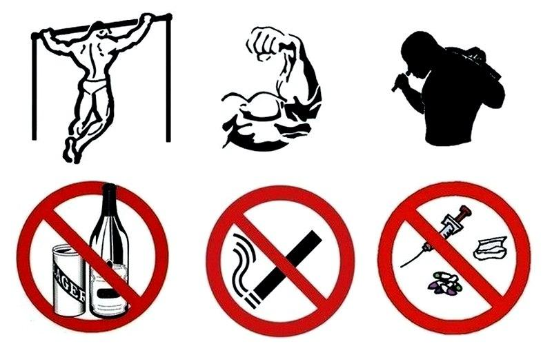

1. Здоровье - это…
2. Какие факторы не влияют на здоровье?

3. Что из перечисленного является слагаемым здорового образа жизни?
4. На что положительно влияет соблюдение здорового образа жизни?
5. Какие правила необходимо соблюдать для правильного сна?
6. Сколько раз в день рекомендуется питаться?

7. Какой интервал между приемами пищи следует соблюдать?
8. Сколько часов в неделю следует заниматься двигательной активностью подросткам?
9. Принципы закаливания - это…
10. Что развивает упражнения на перекладине?
11. К чему может привести злоупотребление алкоголя?
12. С помощью какого прибора можно определить степень развития легких?
13. При помощи чего измеряется пульс?
14. К чему может привести недостаток воды в организме?
15. После занятия физическими упражнениями следует…